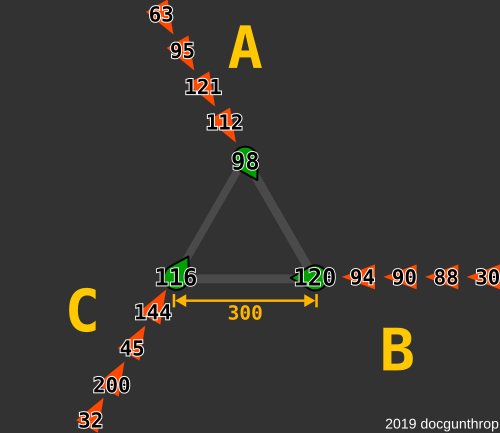

Queue Battle
Points: 4 kyu
Kata ID: 5d617c2fa5e6a2001a369da2
“"Forward!", he cried from the rear
And the front rank died
The general sat and the lines on the map
Moved from side to side”Us and Them -- Pink Floyd
A few army battalions from warring nations have met on an even battlefield. Each nation has one battalion present and all battalions have an equal number of soldiers. Every soldier is armed with one rifle and unlimited ammunition. Every soldier also has perfect shooting accuracy. And all armies follow the rules of engagement below.
Rules of Engagement
1. Each army battalion forms its own straight line queue
2. Each line is formed such that the head of each queue faces the head of the opposing army queue to its left (or when there are only two remaining armies, both queues face toward each other)
3. All queue heads maintain equal distance from their respective targets
4. There is a 1 second delay for each queue head to fire his weapon (time taken to lift weapon, aim, then fire)
5. If a queue head gets hit by any bullets during that 1 second delay (including at the exact moment the head is expected to shoot), he falls before he can fire his rifle. Otherwise, he shoots his rifle and immediately walks back to the end of his queue.
Note that the head will receive all bullets that reach his position during that round.
6. The next soldier in queue then takes his place as head at the start of the next round. If there is only one soldier remaining in a queue, he will stand in place and shoot his rifle every round until he falls or emerges victorious
7. An army is eliminated when all its soldiers have fallen. When an elimination occurs, the eliminator changes their target to the next army queue in sequence at the start of the next round.
8.A. If an elimination occurs during the round, then all remaining armies reposition themselves at the start of the next round and repeat the cycle from step 2. All bullets still in flight at the end of the round will miss all their targets when the repositioning occurs.
8.B If no elimination occurs in the round, start again from step 4.
The Rules of Engagement are followed until there are 0 or 1 surviving armies.
Each round (i.e. queue shift) has a one second duration and the heads of each queue shoot at the same time
Weapons
All nations purchase their munitions from the same supplier, Discount Rifles and Bullets, Inc. (aka DRABI)
All DRABI rifles have perfect firing accuracy. However, because many different machines are used to manufacture the rifles, rifles may or may not have different bullet speeds.
You have a master list of bullet speeds for each rifle and you also know the initial arrangement of all queues in battle. With those resources, you seek to find out which, if any, army survives.
Input
Your function will receive anywhere from 3 to 9 arguments:
- The first argument will always be positive integer representing the
distancebetween each queue head and his target - Any additional arguments will each be given as an array/tuple of positive integers; these arrays each represent an army battalion. Each
ith value in a given array represents the bullet speed for theith soldier's rifle in that battalion's queue. The bullet speed is measured asdistance / second.
Output
Return the number of the surviving army, given as its argument position.
Also return an array/tuple of that army's surviving soldiers, by index position from its original list. This list should be sorted in queue order, starting with the queue head at time of victory.
If all battalions are wiped out and there are no survivors, return -1 and an empty array/tuple.
Test Example
The image above references the example given below.
In our example, we are given 3 armies that form their respective queues. Each head (green pointed indicators) faces and fires at the opponent head to the left.
In the tests, each queue head shoots at the head of the next queue that follows, and completes the loop with the last queue shooting at the first.
The image below represents the queues after army C is eliminated. Note they change formation and face each other while always maintaining the same distance.
// in JavaScript the first argument is given as a positive integer
// subsequent arguments are given as arrays of positive integers
const A = [98,112,121,95,63];
const B = [120,94,90,88,30];
const C = [116,144,45,200,32];
// the function should return an array of two elements: an integer and an array of integers
// In our example, the first army emerges as the sole survivor, and the remaining queue for that army consists of only the 3rd soldier
queueBattle(300,A,B,C); // returns the array [0,[2]]
Click here for a step-by-step of the first four rounds of our example test
We'll refer to units of distance as DU (distance units)
Round 1
After initial 1 second delay, each queue head fires, then goes to the back of their respective queue.
Round 2
The next soldier for each queue fires their weapon after a 1 second delay. At the moment each soldier fires, there are already 3 bullets in flight:
- Bullet
0: traveling at98DU per second, it has already traveled for 1 second and is now202DU away from its target (the head of queueB) - Bullet
1: traveling at120DU per second, it is180DU away from its target. - Bullet
2: traveling at116DU per second, it is184DU away from its target.
Round 3
At the moment when the next queue heads fire, there are 6 bullets in flight (not including the bullets fired this round).
The 1st round of bullets have now traveled 196, 240, and 232 DU, respectively.
The 2nd round of bullets have traveled 112, 94, and 144 DU, respectively.
Round 4
First blood is drawn during this round.
Before the head of queue C can fire, he is hit by the first bullet shot by queue B. The head of queue A is also shot before he can fire.
The only head that fires his rifle is from queue B.
At this point, there are 7 bullets in flight, excluding the bullet shot this round.
The first bullet shot by queue A has now traveled 294 DU, and is therefore 6 DU away from its target. It will reach its target in round 5, before the queue head can fire.
In our example, we saw the new positioning when going from 3 to 2 queues. Other tests will have a random number of queues (up to a max of 8).
The following diagrams serve as a visual guide to show other battle positions formed depending on the number of active queues.
Technical Details
- All tests will be valid
- Test constraints:
2 <= number of queues <= 88 <= bullet speed < 2e680 <= distance < 1e6bullet speed >= distance/105 <= queue length < 2000
- Use Python 3.6+ for the Python translation
- In JavaScript,
moduleandrequireare disabled - Full Test Suite:
10fixed tests and150random tests
If you enjoyed this kata, be sure to check out my other katas